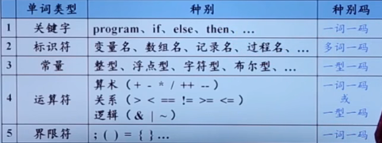

编译原理｜概述
什么是编译
- 编译：将
高级语言翻译成汇编语言或机器语言的过程 - 编译器在语言处理系统中的位置
编译系统的结构
- 编译器的阶段
词法分析概述
- 词法分析的主要任务
- 从左向右逐行扫描源程序的字符，识别出各个单词，确定
单词类型 - 将识别出的单词转换成统一的
机内表示——词法单元(token)形式- token：< 种别码，属性值 >

- token：< 种别码，属性值 >
- 从左向右逐行扫描源程序的字符，识别出各个单词，确定
语法分析概述
- 语法分析器(parser) 从词法分析器输出的 token 序列中
识别出各类短语，并构造语法分析树(parse tree)- 语法分析树描述了句子的语法结构
语义分析概述
- 语义分析的主要任务
- 收集标识符的属性信息
- 种属(Kind)
- 简单变量、复合变量（数组、记录、…）、过程、…
- 类型(Type)
- 整型、实型、字符型、布尔型、指针型、…
- 存储位置、长度
- 值
- 作用域
- 参数和返回值信息
- 参数个数、参数类型、参数传递方式、返回值类型、…
- 参数个数、参数类型、参数传递方式、返回值类型、…
- 种属(Kind)
- 语义检查
- 变量或过程
未经声明就使用 - 变量或过程名
重复声明 运算分量类型不匹配操作符与操作数之间的类型不匹配- 数组下标不是整数
- 对非数组变量使用数组访问操作符
- 对非过程名使用过程调用操作符
- 过程调用的参数类型或数目不匹配
- 函数返回类型有误
- 变量或过程
- 收集标识符的属性信息
中间代码生成及编译器后端概述
- 常见的中间表示形式
- 三地址码 (Three-address Code)
- 三地址码由
类似于汇编语言的指令序列组成， - 每个指令
最多有三个操作数(operand)
- 三地址码由
- 语法结构树/语法树 (Syntax Trees)
- 三地址码 (Three-address Code)
- 常用三地址指令

地址可以具有如下形式之一- 源程序中的
名字(name) 常量(constant)- 编译器生成的
临时变量(temporary)
- 源程序中的
- 三地址指令的表示
- 四元式 (Quadruples)
- (op, y, z, x)

- (op, y, z, x)
- 三元式 (Triples)
- 间接三元式 (Indirect triples)
- 四元式 (Quadruples)
本博客所有文章除特别声明外，均采用 CC BY-SA 4.0 协议 ，转载请注明出处！